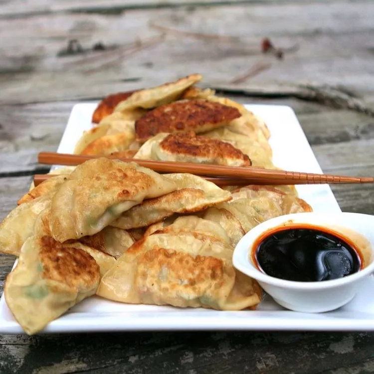

Home
Authentic Chinese Egg Rolls

Description
Potstickers are traditionally made with pork, but these dumplings feature ground shrimp and beef.
Ingredients
- 1 pound raw shrimp, peeled and deveined
- 4 pounds ground beef
- 1 tablespoon minced fresh ginger root
- 1 shallot, minced
- 1 bunch green onions, chopped
- 3 leaves napa cabbage, chopped
- 2 tablespoons soy sauce
- 1 teaspoon Asian (toasted) sesame oil
- salt and white pepper to taste
- 1 pinch white sugar
- 1 (10 ounce) package round gyoza/potsticker wrappers
- vegetable oil
- ¼ cup water
Steps
- To make the filling: Place shrimp in a food processor,
and process until shrimp are finely ground;
transfer into a large bowl and set aside.
Working in batches, process ground beef until
fine, add to ground shrimp. Add ginger, shallot,
green onions, napa cabbage, soy sauce, sesame
oil, salt, white pepper, and white sugar to shrimp
and beef mixture; mix thoroughly until well combined.
- To fill the potstickers: Place a wrapper on the work
surface and add a scant teaspoon of filling in the
center. With a wet finger, dampen the edges of the
wrapper. Fold dough into a half-moon shape, enclosing
the filling, and press and seal to remove extra air and
tightly seal the edges together. It's nice to fold
several small pleats in the top half of the wrapper
for a traditional look before you seal in the filling.
Refrigerate the filled wrappers on a parchment-lined
baking sheet while you finish filling and sealing
the potstickers.
- Heat oil in a large nonstick skillet with a lid over
medium heat. Place potstickers into hot oil,
flat-side down, without crowding, and let fry until
the bottoms are golden brown, 1 to 2 minutes. Turn
dumplings over, and pour water over them. Cover the
pan with a lid and let dumplings steam until water
has nearly evaporated and dumplings have begun to
fry in oil again, 5 to 7 minutes. Uncover the skillet,
and let potstickers cook until all the water is
evaporated and the wrapper has shrunk down tightly
onto the filling, another 2 to 3 minutes.